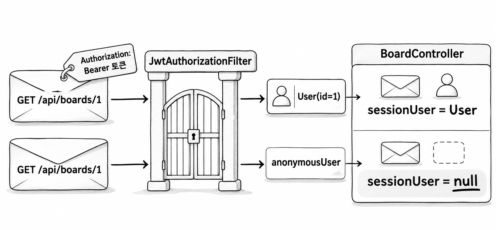
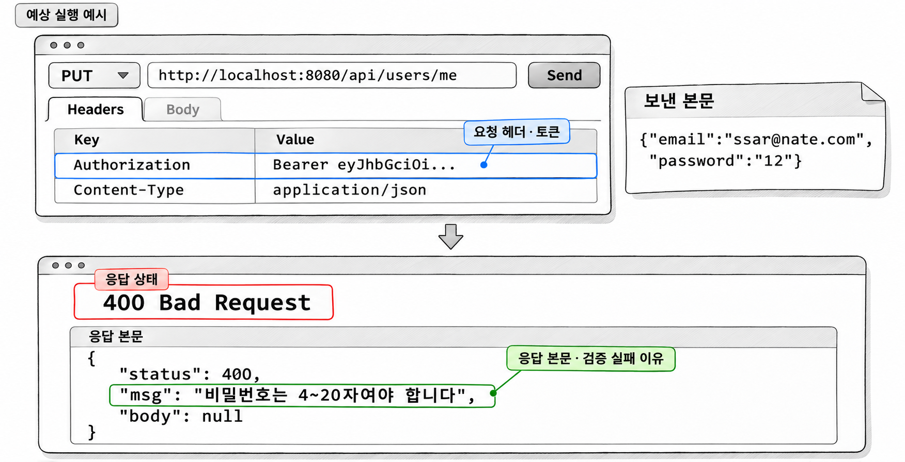

17장. 내 글 표시와 내 정보 수정
1. 내 글 표시
1.1 로그인하지 않은 요청과 null
글 상세 화면에서는 보통 내가 쓴 글에만 수정 버튼과 삭제 버튼을 보여 줍니다. 버튼을 보여 줄지 정하려면 응답에 "요청한 사람이 이 글을 썼는가"라는 정보가 있어야 합니다. 이 장에서는 그 정보를 owner라는 boolean 값으로 글 상세 응답에 담습니다.
owner를 계산하려면 요청한 사람의 회원 번호가 필요합니다. 그런데 14장에서 정한 주소 규칙에서 GET /api/boards/**는 permitAll()입니다. 글 상세는 로그인하지 않은 사람도 볼 수 있습니다. 그래서 같은 주소로 토큰이 있는 요청과 없는 요청이 함께 들어옵니다.
토큰이 없는 요청이 오면 JwtAuthorizationFilter는 SecurityContextHolder에 아무것도 넣지 않고 다음 필터로 넘깁니다. 그러면 뒤쪽 필터가 그 요청의 인증 정보를 익명 사용자(anonymous user)로 채웁니다. 익명 사용자의 인증 정보에 든 주체(principal)는 User 객체가 아니라 "anonymousUser"라는 문자열입니다. @AuthenticationPrincipal User sessionUser는 주체가 User 타입일 때만 그 객체를 넣어 주고, 타입이 맞지 않으면 null을 넣습니다. 따라서 로그인하지 않은 요청에서는 sessionUser가 null입니다.

그림 17-1의 아래쪽 요청처럼 sessionUser가 null인데 getId()를 바로 부르면 NullPointerException이 납니다.
코드 조각
@GetMapping("/api/boards/{id}")
public ResponseEntity<?> detail(@AuthenticationPrincipal User sessionUser, @PathVariable("id") Integer id) {
return Resp.ok(boardService.글상세(id, sessionUser.getId()));
}로그인한 사람은 이 코드로도 글을 문제없이 봅니다. 로그인하지 않은 사람이 요청하면 sessionUser.getId()에서 예외가 납니다. 7장에서 만든 exUnknown()이 그 예외를 받아 500을 응답합니다. 누구나 볼 수 있어야 하는 글 상세가 로그인하지 않은 사람에게는 서버 오류로 보이는 것입니다.
그래서 컨트롤러에서 sessionUser가 null인지 먼저 확인합니다. null이면 회원 번호도 null로 넘기고, DTO는 "회원 번호가 null이면 누구의 글도 아니다"라고 판단하게 만듭니다.
1.2 글에 owner 표시
글 상세 응답 DetailDTO에 owner 필드를 더하고, 보조 생성자가 회원 번호를 함께 받게 합니다. 서비스의 글상세()와 컨트롤러의 detail()도 회원 번호를 넘기도록 고칩니다.
예제 17-1 — 글 상세에 내 글 표시하기
이어서: 예제 16-8
파일명: src/main/java/com/newtenco/blog/board/BoardResponse.java
package com.newtenco.blog.board;
import com.newtenco.blog.reply.Reply;
import org.springframework.data.domain.Page;
import java.sql.Timestamp;
import java.util.List;
public class BoardResponse {
public record ListDTO(Integer id, String title, String content, String username, Timestamp createdAt) {
public ListDTO(Board board) {
this(board.getId(), board.getTitle(), board.getContent(), board.getUser().getUsername(), board.getCreatedAt());
}
}
public record PageDTO(List<ListDTO> boards, int number, int totalPage, boolean isFirst, boolean isLast) {
public PageDTO(Page<Board> boardPage) {
this(boardPage.getContent().stream().map(ListDTO::new).toList(),
boardPage.getNumber(),
boardPage.getTotalPages(),
boardPage.isFirst(),
boardPage.isLast());
}
}
public record DetailDTO(Integer id, String title, String content, Integer userId, String username, boolean owner,
List<ReplyDTO> replies) {
public DetailDTO(Board board, Integer sessionUserId) {
this(board.getId(), board.getTitle(), board.getContent(), board.getUser().getId(), board.getUser().getUsername(),
board.getUser().getId().equals(sessionUserId),
board.getReplies().stream().map(ReplyDTO::new).toList());
}
public record ReplyDTO(Integer id, String comment, Integer userId, String username) {
public ReplyDTO(Reply reply) {
this(reply.getId(), reply.getComment(), reply.getUser().getId(), reply.getUser().getUsername());
}
}
}
}파일명: src/main/java/com/newtenco/blog/board/BoardService.java
package com.newtenco.blog.board;
import com.newtenco.blog.core.handler.errors.ForbiddenException;
import com.newtenco.blog.core.handler.errors.NotFoundException;
import com.newtenco.blog.user.User;
import lombok.RequiredArgsConstructor;
import org.springframework.data.domain.PageRequest;
import org.springframework.data.domain.Pageable;
import org.springframework.data.domain.Sort;
import org.springframework.stereotype.Service;
import org.springframework.transaction.annotation.Transactional;
@RequiredArgsConstructor
@Transactional(readOnly = true)
@Service
public class BoardService {
private final BoardRepository boardRepository;
public BoardResponse.PageDTO 글목록(Integer page, String keyword) {
Pageable pageable = PageRequest.of(page, 3, Sort.by(Sort.Direction.DESC, "id"));
return new BoardResponse.PageDTO(boardRepository.findAllJoinUser(keyword, pageable));
}
@Transactional
public BoardResponse.ListDTO 글쓰기(BoardRequest.SaveDTO reqDTO, User sessionUser) {
Board savedBoard = boardRepository.save(reqDTO.toEntity(sessionUser));
return new BoardResponse.ListDTO(savedBoard);
}
@Transactional
public BoardResponse.ListDTO 글수정(Integer id, BoardRequest.UpdateDTO reqDTO, Integer sessionUserId) {
Board board = boardRepository.findById(id)
.orElseThrow(() -> new NotFoundException("게시글을 찾을 수 없습니다"));
if (!board.getUser().getId().equals(sessionUserId)) {
throw new ForbiddenException("게시글을 수정할 권한이 없습니다");
}
board.update(reqDTO.title(), reqDTO.content());
return new BoardResponse.ListDTO(board);
}
@Transactional
public void 글삭제(Integer id, Integer sessionUserId) {
Board board = boardRepository.findById(id)
.orElseThrow(() -> new NotFoundException("게시글을 찾을 수 없습니다"));
if (!board.getUser().getId().equals(sessionUserId)) {
throw new ForbiddenException("게시글을 삭제할 권한이 없습니다");
}
boardRepository.delete(board);
}
public BoardResponse.DetailDTO 글상세(Integer id, Integer sessionUserId) {
Board board = boardRepository.findByIdJoinUserAndReplies(id)
.orElseThrow(() -> new NotFoundException("게시글을 찾을 수 없습니다"));
return new BoardResponse.DetailDTO(board, sessionUserId);
}
}파일명: src/main/java/com/newtenco/blog/board/BoardController.java
package com.newtenco.blog.board;
import com.newtenco.blog.core.util.Resp;
import com.newtenco.blog.user.User;
import jakarta.validation.Valid;
import lombok.RequiredArgsConstructor;
import org.springframework.http.ResponseEntity;
import org.springframework.security.core.annotation.AuthenticationPrincipal;
import org.springframework.web.bind.annotation.DeleteMapping;
import org.springframework.web.bind.annotation.GetMapping;
import org.springframework.web.bind.annotation.PathVariable;
import org.springframework.web.bind.annotation.PostMapping;
import org.springframework.web.bind.annotation.PutMapping;
import org.springframework.web.bind.annotation.RequestBody;
import org.springframework.web.bind.annotation.RequestParam;
import org.springframework.web.bind.annotation.RestController;
@RequiredArgsConstructor
@RestController
public class BoardController {
private final BoardService boardService;
@GetMapping("/api/boards")
public ResponseEntity<?> list(@RequestParam(value = "page", defaultValue = "0") Integer page,
@RequestParam(value = "keyword", defaultValue = "") String keyword) {
return Resp.ok(boardService.글목록(page, keyword));
}
@PostMapping("/api/boards")
public ResponseEntity<?> save(@AuthenticationPrincipal User sessionUser, @Valid @RequestBody BoardRequest.SaveDTO reqDTO) {
return Resp.ok(boardService.글쓰기(reqDTO, sessionUser));
}
@PutMapping("/api/boards/{id}")
public ResponseEntity<?> update(@AuthenticationPrincipal User sessionUser, @PathVariable("id") Integer id,
@Valid @RequestBody BoardRequest.UpdateDTO reqDTO) {
return Resp.ok(boardService.글수정(id, reqDTO, sessionUser.getId()));
}
@DeleteMapping("/api/boards/{id}")
public ResponseEntity<?> delete(@AuthenticationPrincipal User sessionUser, @PathVariable("id") Integer id) {
boardService.글삭제(id, sessionUser.getId());
return Resp.ok(null);
}
@GetMapping("/api/boards/{id}")
public ResponseEntity<?> detail(@AuthenticationPrincipal User sessionUser, @PathVariable("id") Integer id) {
Integer sessionUserId = sessionUser == null ? null : sessionUser.getId();
return Resp.ok(boardService.글상세(id, sessionUserId));
}
}실행 결과
서버를 실행하고 Postman에서 토큰 없이 GET http://localhost:8080/api/boards/1을 보냅니다. 1번 글은 ssar가 썼지만 요청한 사람이 누구인지 모르므로 owner가 false입니다.
{
"status": 200,
"msg": "성공",
"body": {
"id": 1,
"title": "제목1",
"content": "내용1",
"userId": 1,
"username": "ssar",
"owner": false,
"replies": []
}
}이번에는 POST http://localhost:8080/login에 {"username":"ssar","password":"1234"}를 보내 로그인합니다. 응답 헤더의 Authorization 값을 복사해 같은 이름의 요청 헤더에 넣습니다. 그다음 GET /api/boards/1을 다시 보내면 owner만 true로 바뀝니다.
{
"status": 200,
"msg": "성공",
"body": {
"id": 1,
"title": "제목1",
"content": "내용1",
"userId": 1,
"username": "ssar",
"owner": true,
"replies": []
}
}같은 토큰으로 cos가 쓴 5번 글을 GET /api/boards/5로 요청하면 owner는 false입니다.
컨트롤러의 삼항 연산자는 sessionUser가 null이면 회원 번호로 null을 넘깁니다. 덕분에 로그인하지 않은 요청도 예외 없이 서비스까지 내려갑니다.
owner를 계산하는 식 board.getUser().getId().equals(sessionUserId)에서는 비교 순서가 중요합니다. 글 작성자의 번호는 DB에서 읽은 값이라 null일 수 없으므로 앞에 둡니다. 그러면 equals(null)이 예외 없이 false를 돌려줍니다. 순서를 바꿔 sessionUserId.equals(...)로 쓰면 로그인하지 않은 요청에서 다시 NullPointerException이 납니다. Integer끼리는 15장의 작성자 검사처럼 ==가 아니라 equals()로 비교합니다.
owner는 화면에 버튼을 보여 줄지 정하는 표시일 뿐이고 권한 검사가 아닙니다. 누군가 owner를 무시하고 남의 글에 PUT이나 DELETE를 보내도 15장의 글수정()과 글삭제()가 403으로 막습니다. 화면 표시와 서버 검사는 둘 다 있어야 합니다.
2. 내 정보 수정
2.1 이메일 수정과 변경 감지
로그인한 회원이 자기 이메일과 비밀번호를 바꾸는 API를 만듭니다. 주소는 14장의 내 정보 조회와 같은 /api/users/me이고, 수정이므로 HTTP 메서드는 PUT입니다. 수정할 회원은 주소나 요청 본문이 아니라 토큰에서 꺼낸 sessionUser로 정합니다. 그래서 다른 회원의 정보를 고칠 방법이 처음부터 없습니다. 이 주소는 14장의 /api/** 인증 규칙에 걸리므로, 토큰 없이 보내면 필터 단계에서 401로 막힙니다.
먼저 이메일만 바꿉니다. 엔티티에 값을 바꾸는 update() 메서드를 두고, 서비스는 회원을 조회한 뒤 이 메서드만 부릅니다. 15장의 글 수정처럼 변경 감지(dirty checking)가 트랜잭션이 끝날 때 바뀐 필드를 찾아 update SQL을 실행합니다. 그래서 save()를 부르지 않습니다.
update()는 이메일과 비밀번호를 함께 받게 만듭니다. 비밀번호는 2.2에서 바꾸므로, 이 단계의 서비스는 기존 비밀번호 user.getPassword()를 그대로 넘깁니다. 이메일은 비어 있으면 안 되므로 11장의 회원가입처럼 @NotBlank와 @Email을 붙이고, 컨트롤러에 @Valid를 씁니다.
예제 17-2 — 이메일 수정 API 만들기
이어서: 예제 17-1
파일명: src/main/java/com/newtenco/blog/user/User.java
package com.newtenco.blog.user;
import jakarta.persistence.Column;
import jakarta.persistence.Entity;
import jakarta.persistence.GeneratedValue;
import jakarta.persistence.GenerationType;
import jakarta.persistence.Id;
import jakarta.persistence.Table;
import lombok.Builder;
import lombok.Getter;
import lombok.NoArgsConstructor;
import org.hibernate.annotations.CreationTimestamp;
import java.sql.Timestamp;
@NoArgsConstructor
@Getter
@Entity
@Table(name = "user_tb")
public class User {
@Id
@GeneratedValue(strategy = GenerationType.IDENTITY)
private Integer id;
@Column(unique = true, length = 20, nullable = false)
private String username;
@Column(length = 60, nullable = false)
private String password;
@Column(length = 30, nullable = false)
private String email;
@CreationTimestamp
private Timestamp createdAt;
@Builder
public User(Integer id, String username, String password, String email, Timestamp createdAt) {
this.id = id;
this.username = username;
this.password = password;
this.email = email;
this.createdAt = createdAt;
}
public void update(String email, String password) {
this.email = email;
this.password = password;
}
}파일명: src/main/java/com/newtenco/blog/user/UserRequest.java
package com.newtenco.blog.user;
import jakarta.validation.constraints.Email;
import jakarta.validation.constraints.NotBlank;
import jakarta.validation.constraints.Size;
public class UserRequest {
public record JoinDTO(
@NotBlank(message = "유저네임을 입력해주세요")
@Size(min = 4, max = 20, message = "유저네임은 4~20자여야 합니다")
String username,
@NotBlank(message = "비밀번호를 입력해주세요")
@Size(min = 4, max = 20, message = "비밀번호는 4~20자여야 합니다")
String password,
@NotBlank(message = "이메일을 입력해주세요")
@Email(message = "이메일 형식이 올바르지 않습니다")
String email) {
public User toEntity(String encPassword) {
return User.builder()
.username(username)
.password(encPassword)
.email(email)
.build();
}
}
public record LoginDTO(
@NotBlank(message = "유저네임을 입력해주세요")
String username,
@NotBlank(message = "비밀번호를 입력해주세요")
String password) {
}
public record UpdateDTO(
@NotBlank(message = "이메일을 입력해주세요")
@Email(message = "이메일 형식이 올바르지 않습니다")
String email,
String password) {
}
}파일명: src/main/java/com/newtenco/blog/user/UserService.java
package com.newtenco.blog.user;
import com.newtenco.blog.core.handler.errors.BadRequestException;
import com.newtenco.blog.core.handler.errors.NotFoundException;
import com.newtenco.blog.core.handler.errors.UnauthorizedException;
import com.newtenco.blog.core.util.JwtUtil;
import lombok.RequiredArgsConstructor;
import org.springframework.security.crypto.password.PasswordEncoder;
import org.springframework.stereotype.Service;
import org.springframework.transaction.annotation.Transactional;
@RequiredArgsConstructor
@Transactional(readOnly = true)
@Service
public class UserService {
private final UserRepository userRepository;
private final PasswordEncoder passwordEncoder;
private final JwtUtil jwtUtil;
@Transactional
public UserResponse.DTO 회원가입(UserRequest.JoinDTO reqDTO) {
if (userRepository.existsByUsername(reqDTO.username())) {
throw new BadRequestException("이미 존재하는 유저네임입니다");
}
String encPassword = passwordEncoder.encode(reqDTO.password());
User savedUser = userRepository.save(reqDTO.toEntity(encPassword));
return new UserResponse.DTO(savedUser);
}
public UserResponse.LoginDTO 로그인(UserRequest.LoginDTO reqDTO) {
User user = userRepository.findByUsername(reqDTO.username())
.orElseThrow(() -> new UnauthorizedException("유저네임 혹은 비밀번호가 일치하지 않습니다"));
if (!passwordEncoder.matches(reqDTO.password(), user.getPassword())) {
throw new UnauthorizedException("유저네임 혹은 비밀번호가 일치하지 않습니다");
}
return new UserResponse.LoginDTO(jwtUtil.create(user), new UserResponse.DTO(user));
}
public UserResponse.DTO 내정보(Integer id) {
User user = userRepository.findById(id)
.orElseThrow(() -> new NotFoundException("회원을 찾을 수 없습니다"));
return new UserResponse.DTO(user);
}
@Transactional
public UserResponse.DTO 회원수정(UserRequest.UpdateDTO reqDTO, Integer sessionUserId) {
User user = userRepository.findById(sessionUserId)
.orElseThrow(() -> new NotFoundException("회원을 찾을 수 없습니다"));
user.update(reqDTO.email(), user.getPassword());
return new UserResponse.DTO(user);
}
public UserResponse.AvailableDTO 유저네임중복체크(String username) {
boolean available = !userRepository.existsByUsername(username);
return new UserResponse.AvailableDTO(available);
}
}파일명: src/main/java/com/newtenco/blog/user/UserController.java
package com.newtenco.blog.user;
import com.newtenco.blog.core.util.JwtUtil;
import com.newtenco.blog.core.util.Resp;
import jakarta.validation.Valid;
import lombok.RequiredArgsConstructor;
import org.springframework.http.ResponseEntity;
import org.springframework.security.core.annotation.AuthenticationPrincipal;
import org.springframework.web.bind.annotation.GetMapping;
import org.springframework.web.bind.annotation.PostMapping;
import org.springframework.web.bind.annotation.PutMapping;
import org.springframework.web.bind.annotation.RequestBody;
import org.springframework.web.bind.annotation.RequestParam;
import org.springframework.web.bind.annotation.RestController;
@RequiredArgsConstructor
@RestController
public class UserController {
private final UserService userService;
@PostMapping("/join")
public ResponseEntity<?> join(@Valid @RequestBody UserRequest.JoinDTO reqDTO) {
return Resp.ok(userService.회원가입(reqDTO));
}
@PostMapping("/login")
public ResponseEntity<?> login(@Valid @RequestBody UserRequest.LoginDTO reqDTO) {
UserResponse.LoginDTO loginDTO = userService.로그인(reqDTO);
return ResponseEntity.ok()
.header(JwtUtil.HEADER, loginDTO.accessToken())
.body(new Resp<>(200, "성공", loginDTO.user()));
}
@GetMapping("/api/users/me")
public ResponseEntity<?> me(@AuthenticationPrincipal User sessionUser) {
return Resp.ok(userService.내정보(sessionUser.getId()));
}
@PutMapping("/api/users/me")
public ResponseEntity<?> update(@AuthenticationPrincipal User sessionUser,
@Valid @RequestBody UserRequest.UpdateDTO reqDTO) {
return Resp.ok(userService.회원수정(reqDTO, sessionUser.getId()));
}
@GetMapping("/check-username")
public ResponseEntity<?> checkUsername(@RequestParam("username") String username) {
return Resp.ok(userService.유저네임중복체크(username));
}
}실행 결과
ssar로 로그인해 받은 토큰을 Authorization 헤더에 넣습니다. 그다음 PUT http://localhost:8080/api/users/me에 다음 본문을 보냅니다. Body 탭은 raw · JSON으로 둡니다.
{
"email": "ssar@nate.com"
}{
"status": 200,
"msg": "성공",
"body": {
"id": 1,
"username": "ssar",
"email": "ssar@nate.com"
}
}서버 콘솔에는 회원을 찾는 select 다음에 update SQL이 찍힙니다.
Hibernate:
update
user_tb
set
email=?,
password=?,
username=?
where
id=?서비스 코드에 save()가 없는데도 update SQL이 실행되었습니다. findById()로 조회한 User는 영속성 컨텍스트가 관리하는 엔티티이기 때문입니다. 트랜잭션이 끝날 때 변경 감지가 조회 시점의 스냅샷과 지금 값을 비교해 이메일이 바뀐 것을 찾아냅니다. SQL에 email뿐 아니라 password와 username까지 들어 있는 것은 Hibernate가 기본 설정에서 수정할 수 있는 열을 모두 갱신하기 때문입니다. 15장에서 본 것처럼 @CreationTimestamp가 붙은 created_at은 처음 저장할 때만 값을 넣으므로 빠집니다. 값이 그대로인 열에는 원래 값을 다시 쓰므로 결과는 같습니다. 이어서 GET /api/users/me를 보내면 바뀐 이메일이 나옵니다.
본문에서 email을 빼고 보내면 @NotBlank에 걸려 400이 옵니다.
{
"status": 400,
"msg": "이메일을 입력해주세요",
"body": null
}이 검사가 없으면 null인 이메일이 user.update()까지 내려갑니다. 그러면 트랜잭션이 끝날 때 nullable = false 제약 조건에 걸려 500 오류가 납니다. @Valid가 컨트롤러 입구에서 400으로 막아 주므로 서비스는 형식이 맞는 값만 받습니다.
토큰에는 회원 번호와 유저네임만 들어 있고 이메일은 없습니다. 그래서 이메일을 바꿔도 토큰을 새로 받을 필요가 없습니다.
2.2 비밀번호를 선택적으로 바꾸기
내 정보 수정 화면에서는 보통 비밀번호 칸을 비워 두면 비밀번호를 그대로 둡니다. 무언가를 입력했을 때만 그 값으로 바꿉니다. 서버는 요청의 password를 보고 바꿀지 정해야 합니다. 클라이언트가 키를 아예 빼고 보내면 password는 null이고, 칸을 비운 채 보내면 빈 문자열 ""입니다. 두 경우 모두 "바꾸지 않음"으로 봅니다.
이 판단은 요청 데이터만 보면 할 수 있으므로 UpdateDTO 안에 isPasswordChange() 메서드로 둡니다. record에도 일반 메서드를 둘 수 있습니다. 서비스는 이 메서드가 true일 때만 새 비밀번호를 BCrypt로 암호화하고, 아니면 기존 암호문을 그대로 넘깁니다.
바꿀 때의 비밀번호는 회원가입과 같이 4~20자여야 합니다. 그런데 회원가입에서 쓴 @Size(min = 4, max = 20)를 그대로 붙이면 비밀번호 칸을 비운 요청이 거절됩니다. Bean Validation의 기본 제약 조건은 대부분 null을 통과시키므로 @Size도 null은 통과시킵니다. 하지만 빈 문자열은 길이가 0이라 min = 4에 걸립니다.
@Pattern은 문자열이 정규 표현식에 맞는지 검사하는 제약 조건이고, 이것도 null은 통과시킵니다. 정규 표현식을 ^$|^.{4,20}$로 주면 빈 문자열이거나 4~20자인 문자열만 통과합니다. | 왼쪽의 ^$는 처음과 끝 사이에 아무 글자도 없는 빈 문자열입니다. 오른쪽의 ^.{4,20}$는 아무 글자나 4개 이상 20개 이하인 문자열입니다.
password 값 | @Size(min = 4, max = 20) | @Pattern(regexp = "^$|^.{4,20}$") | isPasswordChange() |
|---|---|---|---|
null(키 없음) | 통과 | 통과 | false |
"" | 실패 | 통과 | false |
"12" | 실패 | 실패 | 검사에서 막힘 |
"5678" | 통과 | 통과 | true |
@Pattern을 통과한 값과 isPasswordChange()의 판단이 짝을 이룹니다. null과 ""는 바꾸지 않고, 4~20자인 값만 암호화해 저장합니다. 입력값 검사와 서비스 로직이 같은 기준으로 움직입니다.
예제 17-3 — 비밀번호를 입력했을 때만 바꾸기
이어서: 예제 17-2
파일명: src/main/java/com/newtenco/blog/user/UserRequest.java
package com.newtenco.blog.user;
import jakarta.validation.constraints.Email;
import jakarta.validation.constraints.NotBlank;
import jakarta.validation.constraints.Pattern;
import jakarta.validation.constraints.Size;
public class UserRequest {
public record JoinDTO(
@NotBlank(message = "유저네임을 입력해주세요")
@Size(min = 4, max = 20, message = "유저네임은 4~20자여야 합니다")
String username,
@NotBlank(message = "비밀번호를 입력해주세요")
@Size(min = 4, max = 20, message = "비밀번호는 4~20자여야 합니다")
String password,
@NotBlank(message = "이메일을 입력해주세요")
@Email(message = "이메일 형식이 올바르지 않습니다")
String email) {
public User toEntity(String encPassword) {
return User.builder()
.username(username)
.password(encPassword)
.email(email)
.build();
}
}
public record LoginDTO(
@NotBlank(message = "유저네임을 입력해주세요")
String username,
@NotBlank(message = "비밀번호를 입력해주세요")
String password) {
}
public record UpdateDTO(
@NotBlank(message = "이메일을 입력해주세요")
@Email(message = "이메일 형식이 올바르지 않습니다")
String email,
@Pattern(regexp = "^$|^.{4,20}$", message = "비밀번호는 4~20자여야 합니다")
String password) {
public boolean isPasswordChange() {
return password != null && !password.isEmpty();
}
}
}파일명: src/main/java/com/newtenco/blog/user/UserService.java
package com.newtenco.blog.user;
import com.newtenco.blog.core.handler.errors.BadRequestException;
import com.newtenco.blog.core.handler.errors.NotFoundException;
import com.newtenco.blog.core.handler.errors.UnauthorizedException;
import com.newtenco.blog.core.util.JwtUtil;
import lombok.RequiredArgsConstructor;
import org.springframework.security.crypto.password.PasswordEncoder;
import org.springframework.stereotype.Service;
import org.springframework.transaction.annotation.Transactional;
@RequiredArgsConstructor
@Transactional(readOnly = true)
@Service
public class UserService {
private final UserRepository userRepository;
private final PasswordEncoder passwordEncoder;
private final JwtUtil jwtUtil;
@Transactional
public UserResponse.DTO 회원가입(UserRequest.JoinDTO reqDTO) {
if (userRepository.existsByUsername(reqDTO.username())) {
throw new BadRequestException("이미 존재하는 유저네임입니다");
}
String encPassword = passwordEncoder.encode(reqDTO.password());
User savedUser = userRepository.save(reqDTO.toEntity(encPassword));
return new UserResponse.DTO(savedUser);
}
public UserResponse.LoginDTO 로그인(UserRequest.LoginDTO reqDTO) {
User user = userRepository.findByUsername(reqDTO.username())
.orElseThrow(() -> new UnauthorizedException("유저네임 혹은 비밀번호가 일치하지 않습니다"));
if (!passwordEncoder.matches(reqDTO.password(), user.getPassword())) {
throw new UnauthorizedException("유저네임 혹은 비밀번호가 일치하지 않습니다");
}
return new UserResponse.LoginDTO(jwtUtil.create(user), new UserResponse.DTO(user));
}
public UserResponse.DTO 내정보(Integer id) {
User user = userRepository.findById(id)
.orElseThrow(() -> new NotFoundException("회원을 찾을 수 없습니다"));
return new UserResponse.DTO(user);
}
@Transactional
public UserResponse.DTO 회원수정(UserRequest.UpdateDTO reqDTO, Integer sessionUserId) {
User user = userRepository.findById(sessionUserId)
.orElseThrow(() -> new NotFoundException("회원을 찾을 수 없습니다"));
String encPassword = reqDTO.isPasswordChange()
? passwordEncoder.encode(reqDTO.password())
: user.getPassword();
user.update(reqDTO.email(), encPassword);
return new UserResponse.DTO(user);
}
public UserResponse.AvailableDTO 유저네임중복체크(String username) {
boolean available = !userRepository.existsByUsername(username);
return new UserResponse.AvailableDTO(available);
}
}실행 결과
코드를 고칠 때마다 devtools가 서버를 다시 띄우고, 그때 H2 메모리 DB도 새로 만들어집니다. 그래서 2.1에서 바꾼 이메일은 사라졌고, ssar의 비밀번호는 다시 1234입니다. 새로 로그인해 토큰을 받은 뒤 PUT /api/users/me에 다음 본문을 보냅니다.
{
"email": "ssar@nate.com",
"password": "5678"
}{
"status": 200,
"msg": "성공",
"body": {
"id": 1,
"username": "ssar",
"email": "ssar@nate.com"
}
}응답 DTO에는 비밀번호가 없으므로 비밀번호가 바뀌었는지는 로그인으로 확인합니다. 서버를 다시 띄우지 않은 상태에서 POST /login에 {"username":"ssar","password":"1234"}를 보내면 401이 옵니다.
{
"status": 401,
"msg": "유저네임 혹은 비밀번호가 일치하지 않습니다",
"body": null
}같은 요청을 "password":"5678"로 보내면 200과 함께 응답 헤더에 새 토큰이 담겨 옵니다. 이번에는 그 토큰으로 {"email":"ssar@nate.com","password":""}를 보내 봅니다. 검사를 통과해 200이 오고, 비밀번호는 바뀌지 않아 계속 5678로 로그인됩니다. password 키를 빼고 보내도 결과는 같습니다.
규칙에 맞지 않는 비밀번호 {"email":"ssar@nate.com","password":"12"}는 @Pattern에 걸립니다.
{
"status": 400,
"msg": "비밀번호는 4~20자여야 합니다",
"body": null
}
생성형 예시 · 실제 실행 안 함
새 비밀번호를 암호화하지 않으면 평문이 그대로 password 열에 저장됩니다. 로그인은 passwordEncoder.matches()로 입력값과 저장된 BCrypt 암호문을 비교합니다. 그래서 평문이 저장되어 있으면 맞는 비밀번호를 넣어도 로그인이 실패합니다. 비밀번호를 그대로 둘 때 user.getPassword()를 다시 암호화하지 않는 것도 같은 이유입니다. 이미 암호문인 값을 한 번 더 암호화하면 원래 비밀번호로 로그인할 수 없게 됩니다.
비밀번호를 바꿔도 이미 발급한 액세스 토큰은 만료 시간까지 그대로 쓸 수 있습니다. 서버가 토큰을 따로 기억하지 않고 서명과 만료 시간만 검사하기 때문입니다. 발급한 토큰을 더 쓰지 못하게 막는 방법은 19장의 로그아웃에서 다룹니다.